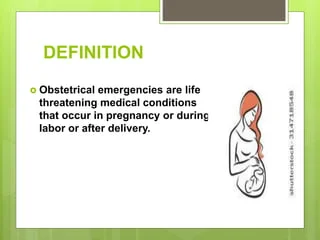

Expanded Nursing Uganda Explanation
Obstetrical and Pediatric Emergencies in Safe Motherhood should be reviewed through safe maternal and newborn assessment, early recognition of danger signs, respectful communication and timely referral. Connect the definition to vital signs, bleeding, fetal or newborn wellbeing, patient education and local protocol requirements.
Contents, 16 sections (tap to expand)
01 Obstetrical Emergencies
Obstetrical Emergency is the situation when the life of the mother or baby is in danger of death and something must be done quickly to save lives.
There is a need for the midwife to take quick action in provision of emergency treatment and consideration of proper referral systems.
02 **List of Obstetrical Emergency**
- AntePartum Hemorrhage
- Postpartum hemorrhage
- Cord prolapse
- Ruptured uterus
- Fetal distress
- Vasa previa
- Intrapartum hemorrhage
- Obstructed labour
- Retained placenta
- Severe preeclampsia and eclampsia
- Pulmonary embolism
- Severe anemia
- Inversion of the uterus
- Impending rupture of uterus
- Obstetric shock.
03 **Roles of a Nurse/Midwife in Obstetrical Emergencies**
- At The Community Level
- ✔ Health education of the community about obstetrical emergencies and their roles in management and prevention
- ✔ Educate, supervise and evaluate the TBAs in management given to the mother during pregnancy, labour and puerperium
- ✔ To create awareness on the available health facility like dispensary, clinics, maternity centre and hospitals
- ✔ To encourage them to attend antenatal clinics, intranatal clinics, postnatal clinics, young child clinics and family planning clinics
- ✔ Advice women to start self-help project to minimize over dependency on their husbands
- ✔ Help them realize the importance of taking a well-balanced diet
- ✔ Discourage harmful traditional practices and beliefs which expose a girl child to early sex marriages as a result of lack of education, boy preferences
- ✔ Husband should take over tiring duties from their wives when pregnant to relieve them psychologically and physically
- ✔ Encourage the community to help to transport in case of obstetrical emergencies.
2. During Pregnancy
- ✔ Identify cases of high risk pregnancies which may end in obstetrical emergencies and refer in time
- ✔ Thorough history taking, examination and early investigations on every mothers during pregnancy
- ✔ Early preparation of mothers for labour and successful lactation
- ✔ Prompt treatment of mothers with minor conditions like morning sickness etc
- ✔ Early referral of mothers with serious conditions for further management
- ✔ Proper referral systems.
- During Labour
- ✔ Proper admission of mothers in labour inform of a warm welcome, reassurance and counseling
- ✔ Proper history taking, examination and investigation on every mother in labour ✔ Proper monitoring of mothers in labour by use of a partograph
- ✔ Early detection of danger signs. the midwife should summon for help in time
- ✔ Avoid prolonged and exhausting labour by administration of analgesics, reassurance and avoid early pushing plus rehydration with IV fluids or per Os
- ✔ Give assisted timely episiotomy in case of assisted delivers to prevent; extended tears, hemorrhage; give episiotomy in mal-presentation and malposition
- ✔ Use aseptic techniques throughout labour, infection prevention and control techniques
- ✔ Ensure proper management of 3 rd stage of labour to prevent PPH.
- After Delivery
- ✔ Carryout proper observation to the mother and baby especially in the 1 st 2 hours to prevent 4 th stage complications
- ✔ Health education of the mothers about the need of;
- – Taking a well-balanced diet
- – Breastfeeding on demands
- – Carrying out postnatal exercise
- – Maintain personal and environmental hygiene
- – Come back for review after 6 weeks to postnatal clinic
- – Attending family planning clinic
- – Bringing the baby in YCC for immunization
04 **General Management**
Principles applied in this management
- Readiness with everything used in management used in management of high risk pregnancy this includes facilities such as:
- ✔ Emergency tray containing the following; ▪ Drugs i.e. Ergometrine, hydrocortisone, diazepam, dexamethasone, mannitol, digoxin, lasix, dextrose 5%, 50%, vitamin K, aminophylline, atropine, pethidine, morphine, pitocin, magnesium sulphate, others are adrenaline, oxygen cylinder, solutions like normal saline, needles and syringes, adequate staffs, Umbu bags and any facility needed for resuscitation
- ✔ The midwife/nurse should be calm, quick and knowledgeable and should summon for help
- ✔ Start with the most urgent need first e.g. arresting hemorrhage, rehydration or delivery of the baby
- ✔ Quick general history taking, examination and investigations
- ✔ Apply the essential care systematically according to the emergency such as delivery, manual removal of the placenta, resuscitation etc (apply nursing process) ✔ Reassure the mother and the relatives
- ✔ Some mothers with HRP are cared for in the maternity centre during pregnancy and referred at full term for delivery in the hospital. others are referred on the first contact
- ✔ Early detection and referral are very important
- ✔ Prepare for transport
- ✔ Writing referral notes which includes the following:-
- ▪ Time of arrival
- ▪ Personal history of the mother
- ▪ General conditions on arrival
- ▪ All what has been found on examination and admission
- ▪ Treatment given plus obstetrical management
- ▪ Reasons for referral
- ▪ Conditions at referral
05 **Complications**
To the mother
Obstetrical emergency exposes the mothers and fetus to a higher chance of morbidity and mortality. This becomes worsened in case the management is delayed or even wrongly applied. There is lack of facilities or poor knowledge; however the mothers and fetus may face the following;
- ✔ Hemorrhage due to APH, PPH and intra-partum hemorrhage
- ✔ Shock as a result of severe bleeding
- ✔ Infections following delay in 2 nd stage and in manual removal of the placenta
- ✔ General ill health
- ✔ Anemia
- ✔ Puerperal psychosis
- ✔ Venous thrombosis
- ✔ Poor lactation
- ✔ Sterility
- ✔ Assisted deliveries
- ✔ Premature labour
- ✔ Low resistance to infections
- ✔ ABO incompatibility
- ✔ Amniotic fluid embolism
- ✔ Infertility as a result of infections and damage to the reproductive system.
To The Baby
- ✔ High neonatal and infant morbidity and mortality
- ✔ Failure to thrive
- ✔ Cerebral damage leading to mental retardation
- ✔ Premature deliveries with their complications
- ✔ Abortions (pregnancy wastage)
- ✔ Assisted deliveries and its complications
- ✔ Intrauterine fetal growth retardation
- ✔ Low resistance to infections.
06 **Prevention of Obstetric Emergencies**
- ✔ The role of a midwife in the obstetric emergencies
- ✔ The nurse/midwife should be knowledgeable of how to deal with the obstetric emergencies
- ✔ Update herself in obstetrical conditions
- ✔ Equip her maternity center and be able to deal with such emergencies efficiently
- ✔ Make sure she can transfer the mother to the hospital immediately.
07 **Pediatric Emergencies**
T hey are considered right from birth up to 5 years of age.
08 **List of pediatric emergencies**
- ✔ Asphyxia as seen in below conditions
- ✔ Intrauterine anoxia due to cord prolapsed and APH
- ✔ Cerebral damage
- ✔ Hemorrhagic of a newborn
As The Child Grows
- Swallowed objects and aspiration
- Poisons
- Insect bites
- Falling
- Burns
- Cuts
- Fractures and diseases.
09 **Causes of Neonatal Morbidity and Mortality**
- Asphyxia neonatorum
- Birth injuries
- Low birth weights
- Hypothermia
- Congenital abnormalities
- Sepsis like neonatal sepsis, pneumonia, acute respiratory infection, diarrhea, tetanus, meningitis and septicemia.
10 **Causes of infant mortality and morbidity in Uganda**
- ✔ Measles
- ✔ Diarrhea
- ✔ URTI
- ✔ Malaria
- ✔ Malnutrition
11 **Management of pediatrics emergencies**
Depends on the causes BUT you have to consider the following;
- Resuscitation
- Induced emesis if the substances taken is not acidic
- Give milk to drink
- Give oxygen
- Put up a drip
Complications of pediatric emergencies
- Depends on the type of pediatric emergencies
- Complications may happen permanently or temporarily at birth or later in life
12 **Prevention of Pediatric Emergencies**
- Health education to the public of pediatric emergencies, their causes and prevention. Since most of the maternal conditions leads to paediatric emergencies, neonatal/infant morbidity and mortality. Therefore in preventing such emergencies, neonatal /infant morbidity and mortality such as high risk pregnancies
- Knowledge of life saving skills in pediatric e.g. resuscitation is essential.
13 Nursing Uganda Clinical Lens
Use Obstetrical and Pediatric Emergencies in Safe Motherhood as a practical nursing topic, not only a memorized definition. Read the topic through the safety of two patients: the mother and the fetus or newborn.
- What to understand first: define obstetrical and pediatric emergencies in safe motherhood, identify the normal or expected pattern, then explain what changes when the patient is unwell.
- Why it matters in care: the nurse must recognize risk early, explain findings clearly, document accurately and know when to escalate.
- How to revise it: connect each point to assessment, nursing diagnosis or care problem, intervention, rationale and evaluation.
14 Assessment Guide
- Maternal vital signs, bleeding, pain, contractions, uterine tone and danger signs.
- Fetal or newborn wellbeing, feeding, temperature, breathing and activity.
- History of pregnancy, parity, medications, allergies, investigations and referral risks.
15 Nursing Priorities, Rationales and Outcomes
- Recognize danger signs early and escalate without delay.
- Provide respectful communication, privacy, infection prevention and clear documentation.
- Teach the mother what to monitor at home and when to return urgently.
The rationale for these priorities is patient safety: nursing actions should prevent deterioration, reduce discomfort, support recovery and create clear evidence for the next caregiver.
- Expected outcome: Mother and baby remain stable, danger signs are acted on early, and the family understands follow-up instructions.
16 Patient Teaching and Revision Check
- Explain obstetrical and pediatric emergencies in safe motherhood in simple language the patient or caregiver can repeat back.
- Teach warning signs, medicine or follow-up instructions, hygiene or lifestyle points where relevant.
- For exams, prepare a short answer using: definition, causes or risk factors, signs, assessment, management, complications and prevention.
- For ward practice, document baseline findings, actions taken, patient response and the plan for review.
Illustrations and Diagrams (1)

Related Video Lectures
Watch nursing lecture videos on YouTube for this topic. Opens in a new tab.
Watch on YouTubeExternal link: YouTube may use its own cookies and terms. Nursing Uganda is not affiliated with YouTube.